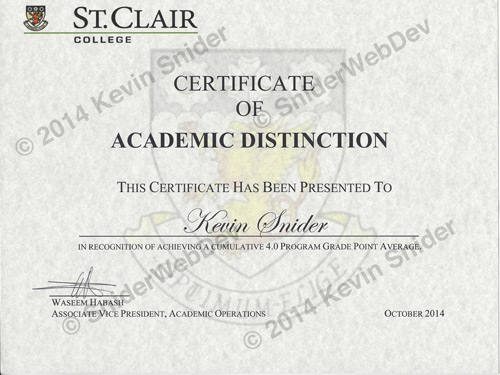

My Experience
I am a life long learner in the world of web.
I am a life long learner in the world of web.
I earned an advanced diploma in Internet Applications and Web Development at St. Clair College in Windsor, Ontario, Canada.
The curriculum was originally a 3 year program but I opted to take the 2 year fast track version.
In addition, I also received a "Certifiate of Academic Distinction" in recognition of achieving a cumulative 4.0 program grade point average.
I am currently working on a few projects. Those projects are:
This simple project is the first project of twelve in the Front End Web Development TechDegree program offered from TreeHouse. I registered for the TechDegree to help me build a portfolio to show to potential clients and employers.
What excites me about web design and development is, that if you have an idea or a dream, you can bring it to life.
My problem is right now I have too many ideas and too many other things to work on at the moment. But if that's a problem, I guess it's a good one to have. I'm sure some of my ideas will appear on GitHub sometime in the future so stay tuned.